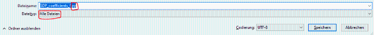

Step 3: List of supporting weights "S"
The set of weights S must be converted to "fit" the SDP.
Similar to above, we create a .csv file.
| > | SDPMinMaxCoefficients(Type,n,d,S,b,LU,"SDP_coefficients_S.csv"); |
| (2.3.1) |
The content of the file looks like this.
(b, L, U) = ([0, 3, -5, 0, 0, 0, 0, 0, 0, 0, 0, 0, 0, 0, 0], [0, -3, 6, 0, 0, 0, 0, 0, 0, 0, 0, 0, 0, 0, 0], [0, 2, 8, 0, 0, 0, 0, 0, 0, 0, 0, 0, 0, 0, 0])
TASKS:
-Produce the .csv file with the list of coefficients with the Maple proc "SDPMinMaxCoefficients" and turn it into a .py file.
